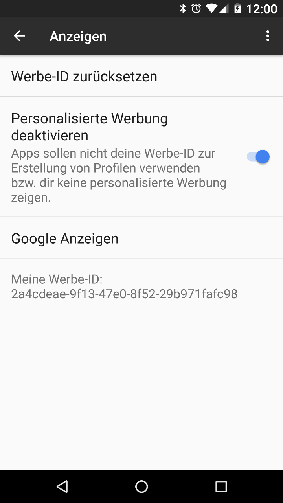

Privacy Browser Free beinhaltet eine Bannerwerbung unten auf dem Bildschirm, welcher von Googles AdMob-Netzwerk befüllt wird. Standardmäßig stellt Google die Werbe-ID des Geräts den Werbungen über dieses Netzwerk zur Verfügung. Das ermöglicht werbenden Firmen, ein Profil von dem Gerät anzulegen, welches zeigt welche Apps installiert sind (welche auch Werbungen zeigen), wie oft sie genutzt werden und an welchen Werbungen der Nutzer interessiert ist.
Benutzer können diese Werbe-ID deaktivieren in Einstellungen, Google, Werbung.
Der Zweck der kostenlosen Version von Privacy Browser ist es, Nutzern zu ermöglichen, die Features der App zu testen. Die Standardversion kann in den bekannten App-Stores gekauft oder kostenlos von F-Droid bezogen werden.